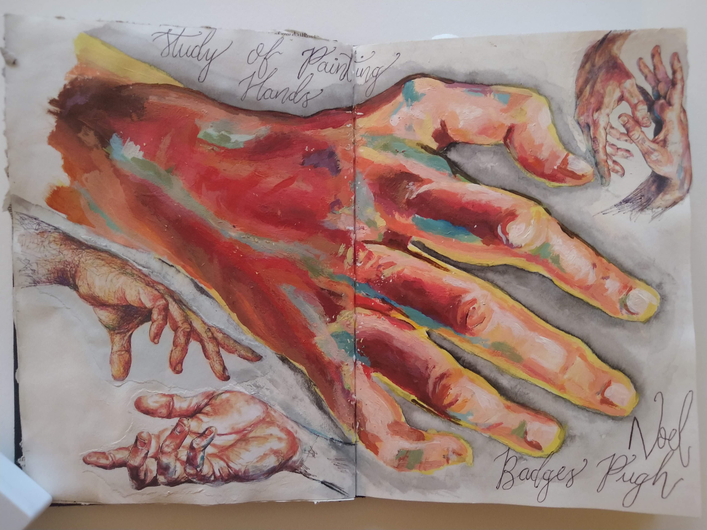
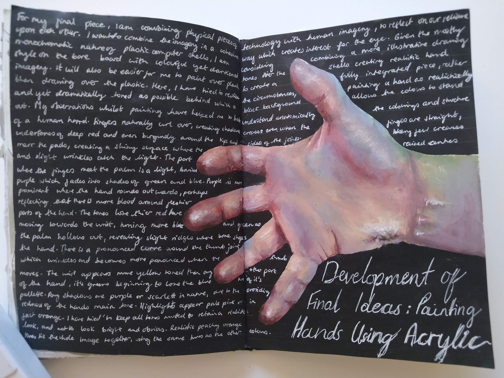
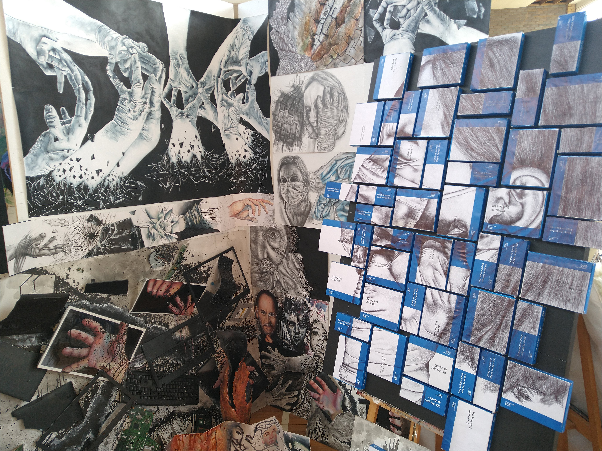
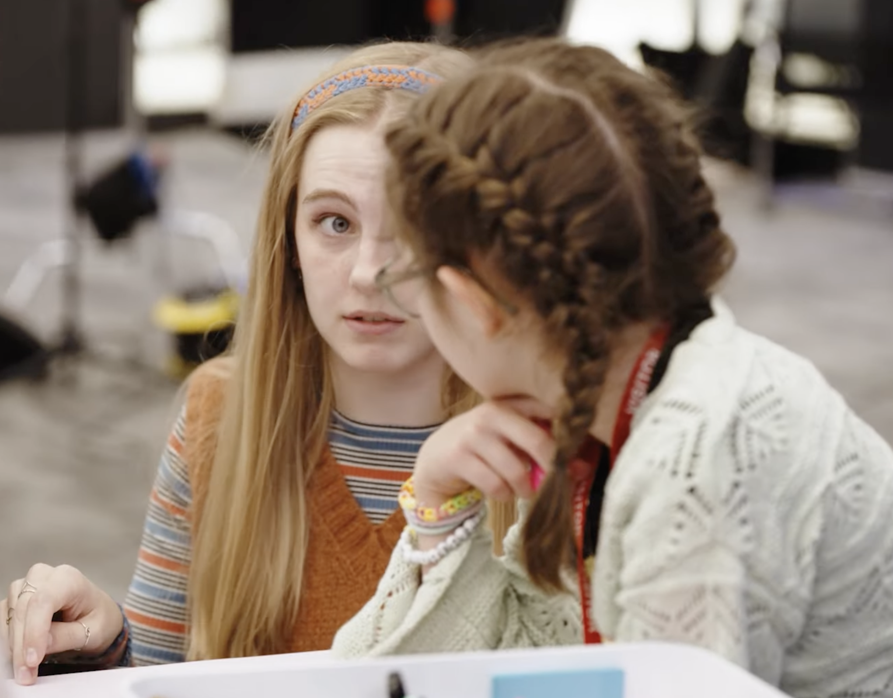
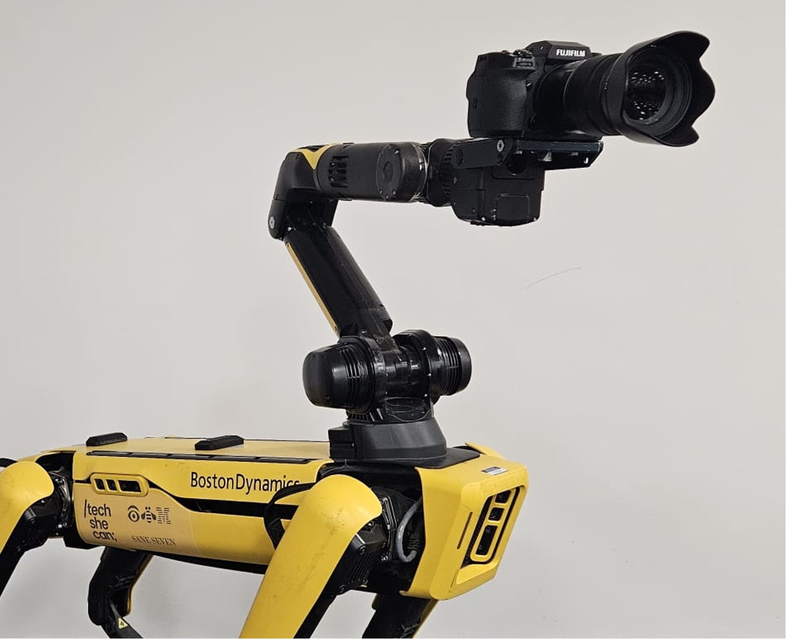
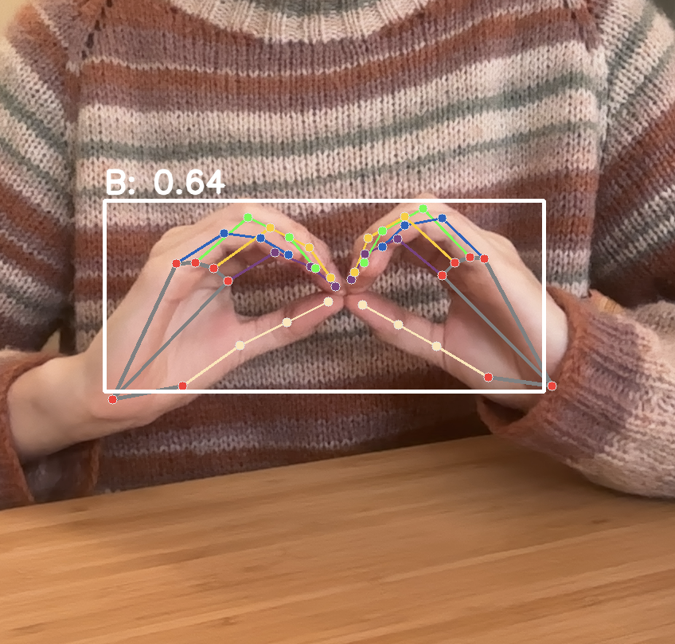
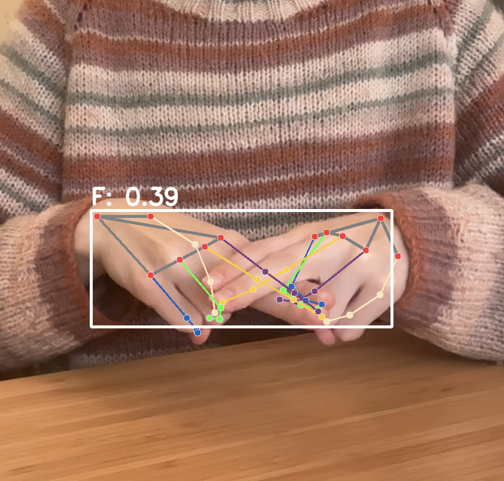
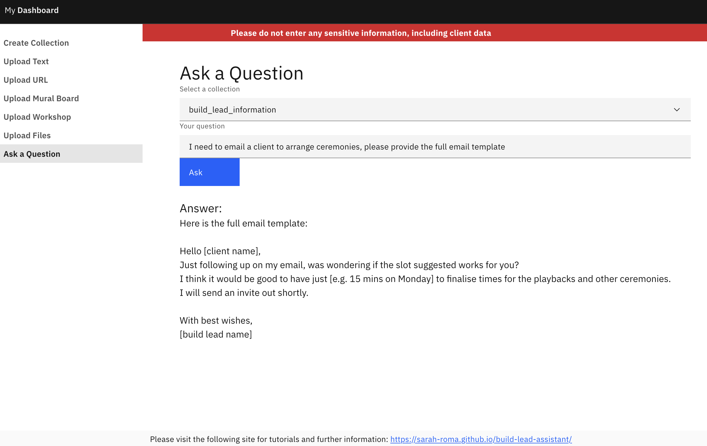
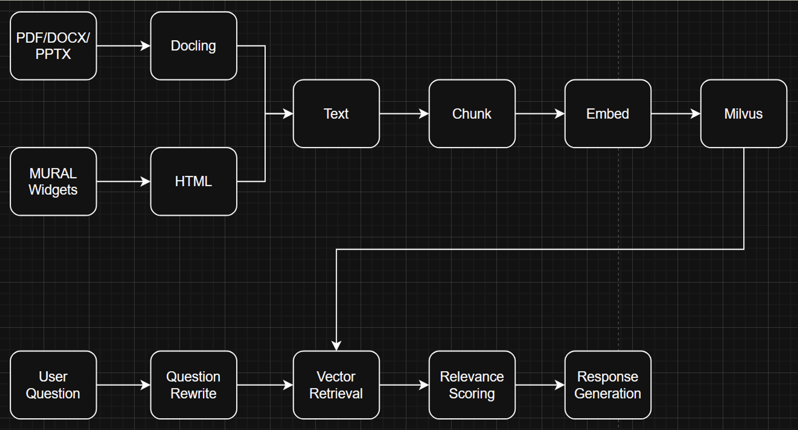

Art & Creative Portfolio
Visual work
A-Level Fine Art - Early/Foundational Work
A selection of pieces from my A-Level Fine Art course, showcasing a range of media and techniques. This includes pencil drawings, sculptures, and mixed media pieces. The final piece was displayed in an exhibition at the end of the course. I focused on the intersection of technology and humanity, exploring how they influence each other - especially throughout the Covid-19 pandemic.







Technical Case Studies
I was approached to support an initiative looking at encouraging young girls into technology. We had to design a solution so that a paralysed photographer Kat could take photos using a Boston Dynamics Spot robot, while also teaching the young girls different concepts of technology and design. Using my unique linux troubleshooting and bash scripting experience, I connected remotely to the robot, also playing a key part in modifying Python scripts using the SDK, as well as programming manual arcade controls to create the control panel to control Spot and capture images remotely. This also involved connecting to the camera SDK and understanding different parameters to ensure the photos were high quality and met Kat's needs. The result? Kat was able to take high quality photos using the Spot rig, with the accessible control panel working perfectly for her needs. The project was a huge success, and the initiative got thousands of views online. The official project site! Check out the video!


Skills: Boston Dynamics SDK, Python, Linux, Bash scripting, Fujifilm SDK, Robotics, API management, Collaboration, Communication
This application used handshape detection technology and machine learning (ML) to recognise one- and two- handed British Sign Language fingerspelling. Timing logic built words from the individually spelled letters. It's a proof of concept exploring what could be possible with the unique challenges BSL fingerspelling recognition presents. Most existing fingerspelling translation solutions use ASL (one-handed) fingerspelling. I wanted to explore how two-handed BSL signs change the nature of the application. Existing fingerspelling recognition applications also focus on recognising one handshape at a time, clearly for practice rather than communication. In this PoC, I explored the feasibility of communication through spelling out words. I followed the following process: generate/import the data, create/choose a model, clean the data, split the data into a training set and a test set, train the model, make predictions, and evaluate and improve the model. Throughout the project, I explored machine learning technologies including CNNs, OpenCV, MediaPipe, RandomForest, ResNets and SVMs. The use of hand landmark recogition was fascinating; it made me consider how AI could impact film production, especially for motion/performance capture. The outcome was a working prototype that recognised a subset of BSL fingerspelling with reasonable accuracy. It was a great learning experience in ML and computer vision, and it sparked my interest in the potential applications of AI in creative industries.


Tools: Various ML technologies, Python, HTML, CSS, Jupyter Notebooks, OpenCV, MediaPipe
This six month final project contributed to my Software Engineering degree apprenticeship as a culmination of all the skills I developed throughout the course. The project was focused on solving a real-world problem in my workplace, which made it especially rewarding. The project was conceived to address a recurring operational problem: build lead knowledge is fragmented across Slack channels, file-sharing software, emails and GitHub repositories, causing inefficiency and reliance on individual expertise. To address this, I designed and developed a Build Lead Assistant — a full-stack web application built on Corrective Retrieval-Augmented Generation (C-RAG) technology. The application allows users to ingest knowledge from multiple sources (file uploads, URLs, raw text, Mural boards, structured workshop data) into vector collections, then query those collections using natural language. The C-RAG pipeline rewrites user queries, retrieves relevant chunks from a vector database, grades their relevance, and generates answers from the verified context, significantly reducing the risk of hallucination. The resulting full-stack application had a Python/FastAPI backend, a React/Vite frontend (mocked using UI wireframes), and a Milvus vector database, all deployed on IBM Cloud using Docker. Understanding the flow of data and orchestrating the various data/components of the application was a fascinating insight into the complexities of real-world data pipelines. This project pushed my capabilities. As a platform engineer whose daily work centres on infrastructure and programming, developing a fullstack application through the entire SDLC, from requirements elicitation to deployment, was challenging. I gained practical experience with technologies including Code Engine, OAuth2 and LangChain, areas encountered peripherally through pilot work that I have never been solely responsible for. It was particularly rewarding to deploy the fullstack application. Managing a six month solo project alongside active CE pilot commitments tested my time management and prioritisation skills. The experience reinforced the importance of realistic scoping, risk identification and mitigation, and flexible planning.


Tools: Docker, OAuth2, LangChain, Vector Databases, FastAPI, React, Code Engine, GitHub Actions
My Creative Process
Creativity is a huge part of my life, from coding to fibre arts and beyond. It appears in my hobbies, including digital art, knitting and ballet, and it also influences how I approach technical projects, including creating accessible dashboards and real-life applications.
Key interests: Krita, baking, storytelling, communication, inclusion, diversity of thought, and the intersection of art and technology.